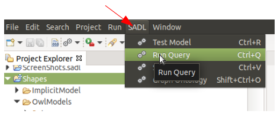
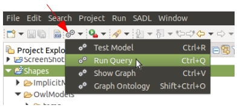
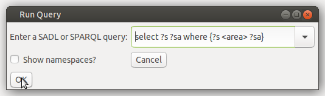

Ad Hoc Queries in the SADL IDE
Last revised
4/13/2021.
Contact us.
While queries can be persisted as part of a SADL model and run whenever
desired, see Ask Statement, it is
also possible to run SPARQL queries against the current model in an ad hoc
fashion. To do so, follow this sequence of actions.
- Identify the model to be queried. This can be done in either of two
ways:
- Open the SADL model in the SADL editor or the OWL model in a text
editor.
- Select the SADL or OWL file in the Project Explorer window.
- Open the ad hoc query dialog by selecting "Run Query" on the SADL
menu. This can be made visible in either of two ways:
- In the SADL perspective, click on "SADL" in the menu bar

- Click on the SADL icon on the toolbar.

- Enter a SPARQL query into the resulting Run Query dialog.

- Check or uncheck "Show namespaces?", as desired
- Click the OK button.
Results will be displayed in the console window:
Ad hoc query of '.../Shapes/OwlModels/Test.owl' requested.
Reasoner family: Jena-Based
(...JenaAugmentedReasonerPlugin), version date 12 April 2021.
"s","sa"
"http://sadl.org/Shapes/Test#MyRect",13.75